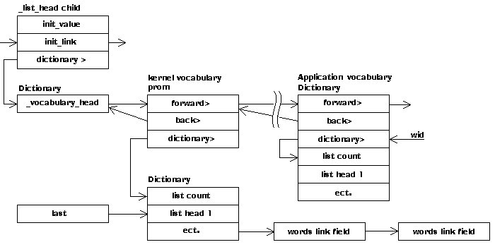

These words treat context as a simple stack. ALSO can be looked on as vocabulary_push and PREVIOUS as vocubulary_drop. When executed a vocabulary child word puts it's wid address into context. ONLY clears context and installs the root vocabulary twice. It is intended ONLY be used in the form:
ONLY voc for example: ONLY FORTH
In the above example FORTH will overwrite the first vocabulary in the search order, which will be the second copy of root put in by only. To added a vocabulary to the search order, for example classes:
ALSO classes
To remove it:
PREVIOUS
To move a vocabulary to current but not add to search order
ALSO classes DEFINITIONS PREVIOUS
HEX
The number of vocabularies that can be searched concurrently, has to be reasonable large to support the cross compiler.
10 CONSTANT #vocs
If a task is allocated a dictionary, a new root vocabulary heads and FORTH vocabulary heads are created for the task. ONLY has to be able to find the wid for root. It is stored in this cell.
uvariable _task_root_wordlist
The search order is kept as a sorted table under context. The count of valid entries is kept in n_context_count.
uvariable n_context_count
uvariable context #vocs 1- CELLS uallot
The words are added to the wordlist pointed to by the top current. We make current a stack sp that the kernel can add words to voacabularies without altering the applications current value. DEFINITION pushes a value. definition_previous pops a value.
4 CONSTANT _#current_vocs
uvariable current _#current_vocs 1- CELLS uallot
Describe a vocabulary. A vocabulary can be a very temporary thing. For instance
local variables create a vocabulay in a buffer that only exist while a word is being
defined. We double link the vocabulary so that it can be destroyed using
the vocabularies wid.

.S ( _#voc_body )
zero
DUP CONSTANT _#voc_body
DUP CONSTANT _#voc_link CELL+ \ link back to head
DUP CONSTANT _#voc_back CELL+ \ double linked list
DUP CONSTANT _#voc_wid
\ Following point to the memory area
\ If vocabulary head is in prom
\ this points to the dictionary space
\ On a cold start the links are copied
\ to the dictionary. If the head is in
\ the dictionary (part of the application)
\ this points to the next cell.
DUP CONSTANT _#voc_head> CELL+
\ so we can display the context and current vocabuulary
DUP CONSTANT _#voc_name> CELL+
\ The init table just happes to
\ be in the same place in the kernel
\ and the application. The applicaion
\ init simple copies data onto itself.
DUP CONSTANT _#voc_end
\ A applicaton vocabulary stores it's heads after the WORDLIST head
\ a kernel vocabulary stores it's heads in the target_dictionary
\ the head in prom.
DROP
zero
DUP CONSTANT _#voc_heads_base
DUP CONSTANT _#voc_heads_count CELL+
DUP CONSTANT _#voc_heads_data
DROP
.S .( _#voc_heads_data)
All vocabularies are linked into here. See link list support for an explanation of _create_double_listhead
_create_double_listhead _vocabulary_head
The vocabularies end up arranges as shown below. This code looks after the kernal vocabulary entries.
A vocabulary must exists in dictionary space, otherwise you can't extend it. At compile time the vocabulary must be constructed in prom. There needs to be a host version of WORDLIST to contrust vocabularies that are started in the kernel, and a target version of WORDLIST for vocabularies started by the application. The head values stored in prom as a result of the cross compile are copied to the dictionary space in the cold start routine.
\ This creats the wordlist in the target mothing more.
forth : WORDLIST ( -- wid )
HOST HERE \ t_here(--
_vocabulary_head \ t_here head(--
dt@ forth DUP \ t_here (head) (head)(--
HOST t, \ t_here (head)
forth OVER \ t_here (head) t_here (--
HOST _vocabulary_head
dt! \ t_here (head)(--
forth \ t_here (head)(--
DUP IF \ there is a backpointer in old entry to update
2DUP \ t_here (head) t_here (head)
HOST CELL+ \ need to use target version of CELL+
t! \ t_here (head)
THEN
\ now update back pointer of new entry.
2DROP \ (--
HOST _vocabulary_head
t, \ back pointer points to dictionary entry
\ pointer to dictionary heads
HERE forth \ wid<-
HOST dictionary_here t, \ wid(--point to dictionary entry
zero t, \ name pointer
forth threads_number @ \ wid count(--
\ find nearest power of 2
\ The low bits of the hash value are used to select the thread
forth >asl 2** HOST CELLS \ wid bytes (--
CELL+ \ wid bytes2(-- allow for count
HOST dictionary_allot \ wid(--
;
HOST
So we can create named wordlists in the kernel, see the targets definition of name_wordlist for further information.
forth : name_wordlist ( wid --)
HOST CREATE t,
DOES> @ ;
HOST
So we can create vocabulary in the kernel, see the targets definition of name_wordlist for further information.
\ Creates the vocabulary in the target.
\ and the word to compile the cfa if found in a
\ : definition xvocabulary creates the host entry.
forth : target_vocabulary ( wid --)
HOST (CREATE) forth DUP HOST t,
\ install as vocabulary name
target_last \ in host
@ \ the address of the head, at this stage this is in host
@ _t_lfa>nfa
SWAP \ name> wid (--
_#voc_name> _#voc_wid - + t!
DOES>
\ pfa
@
context !
;
Set to the number of lists desired before creation. The default is one, but if a lot of words are to be created a greater number may be desirable.
uvariable threads_number
( -- wid )
Create a new empty word list, returning its word list identifier wid. The new word list may be returned from a pool of preallocated word lists or may be dynamically allocated in data space. A system shall allow the creation of at least 8 new word lists in addition to any provided as part of the system.
COLDFORTH creates the new vocabulary in the dictionary, when you run out of dictionary space you run out of the potential to use WORDLIST.
: WORDLIST ( -- wid )
2 CELLS ALLOT
HERE 2 CELLS - _vocabulary_head link_double \ _#voc_link
\ A application WORDLIST simple points to the cell after
\ the WORDLIST head.
HERE >R
HERE [ _#voc_end _#voc_head> - ]T LITERAL
+ , \ _#voc_head> ; point to heads
zero , \ name pointer
\ If you want multiple list change this entry before
\ you use wordlist
\ example
\ threads_number @ 4 _voc_link ! WORDLIST SWAP threads_number !
\
threads_number @ \ Number lists to be used
\ findest nearest power of 2
>asl 2** \ num_lists(--
DUP , \ _#voc_heads_count ; number of lists
zero DO
0 ,
LOOP
R> \ wid (--
;
.S .( after WORDLIST)
We have here a multitasking system so we need to be able to extend the system vocabularies in multiple tasks. This is the solution. The system executes the following code to get things started Trying to add directly to a vocabulary will not work as the heads will not be in your dictionary area.
root \ wid (-- extend_wordlist \ wid2(-- DUP _task_root_wordlist ! \ wid2(-- FORTH-WORDLIST OVER 2 SET-ORDER \ wid2(-- set search order to >root>forth DEFINITIONS \ wid2(--define root in root named_wordlist root \ (-- root defined n new root FORTH-WORDLIST extend_wordlist \ wid3(-- DUP vocabulary FORTH \ wid3(-- FORTH redefined named_wordlist FORTH-WORDLIST \ wid3(-- FORTH-WORDLIST redefined root FORTH-WORDLIST 2 SET-ORDER \ (-- task is started with extendable vocabularies DEFINITIONS
: extend_wordlist ( wid1 -- wid2)
HERE _vocabulary_head link_double
8 ALLOT
HERE >R \ wid to stack
HERE 4 + ,
[ _#voc_head> _#voc_wid - ]T LITERAL + @ \ heads (--
DUP [ _#voc_heads_count _#voc_heads_base - ]T LITERAL + @ \ heads counts <-
1 + \ include the count cell
CELLS TUCK \ bytes heads bytes (--
HERE SWAP MOVE \ bytes (--
ALLOT
R>
;
.S .( extend_wordlist)
( -- widn ... wid1 n )
Returns the number of word lists n in the search order and the word list identifiers widn ... wid1 identifying these word lists. wid1 identifies the word list that is searched first, and widn the word list that is searched last. The search order is unaffected.
: GET-ORDER
n_context_count @ zero ?DO
n_context_count @ I - 1- CELLS context + @
LOOP
n_context_count @
;
( widn ... wid1 n -- )
Set the search order to the word lists identified by widn ... wid1. Subsequently, word list wid1 will be searched first, and word list widn searched last. If n is zero, empty the search order. If n is minus one, set the search order to the implementation-defined minimum search order. The minimum search order shall include the words FORTH-WORDLIST and SET-ORDER. A system shall allow n to be at least eight.
: SET-ORDER ( wid1 .. widn n -- )
DUP [ #vocs 1- ]T LITERAL > ABORT" Vocabulary overload"
DUP -1 = IF
DROP _task_root_wordlist @ DUP 2 RECURSE
EXIT
THEN
DUP n_context_count !
zero ?DO
I CELLS context + !
LOOP
;
SEARCH EXT
( -- )
Transform the search order consisting of widn, ... wid2, wid1 (where wid1 is searched first) into widn, ... wid2, wid1, wid1. An ambiguous condition exists if there are too many word lists in the search order.
: ALSO ( -- )
GET-ORDER
OVER SWAP 1+ DUP [ #vocs 1 - ]T LITERAL > ABORT" Vocabulary overload"
SET-ORDER
;
( -- )
Set the search order to the implementation-defined minimum search order. The minimum search order shall include the words FORTH-WORDLIST and SET-ORDER.
: ONLY ( -- )
-1 SET-ORDER
;
( -- )
Transform the search order consisting of widn, ... wid2, wid1 (where wid1 is searched first) into widn, ... wid2. An ambiguous condition exists if the search order was empty before PREVIOUS was executed.
: PREVIOUS ( -- )
GET-ORDER
SWAP DROP 1-
SET-ORDER
;
SEARCH
( -- )
Make the compilation word list the same as the first word list in the search order. Specifies that the names of subsequent definitions will be placed in the compilation word list. Subsequent changes in the search order will not affect the compilation word list.
COLDFORTHThe replaced vocabulary can be had with previous_definitions.
: _push_definitions ( --)
current current CELL+ [ _#current_vocs 1- CELLS ]T LITERAL MOVE
;
: DEFINITIONS
_push_definitions
context @ current !
;
So you can set a new definition vocabulary and then return to what was. I think a stack with two entries is really enough, we will know when all is finished. As DEFINITIONS is ofen used without previous_definitions it is expected the stack will overflow and stay that way. But it is old entries that are lost. The stack always contains the most recent additions.
: previous_definitions ( --)
current CELL+ current [ _#current_vocs 1- CELLS ]T LITERAL MOVE
;
SEARCH
( -- wid )
Return wid, the identifier of the compilation word list.
: GET-CURRENT ( --wid)
current @
;
SEARCH
( wid -- )
Set the compilation word list to the word list identified by wid.
: SET-CURRENT ( wid --)
current !
;
_#normal_threads forth threads_number !
HOST
\ This can be explained like this. Because we needed FORTH before we
\ could create it the initial creation was done in steps. Now
\ that all is defined we may as well put it all together.
forth : all_vocabulary ( wid --)
\ create structure in host
forth >IN @ \ wid >in (--
OVER HOST
xwordlist \ wid >in voct(--
xvocabulary \ wid >in (--
\ An image of the target heads are kept in the host
\ these have to be set to point to the target end list word.
\ end_head
\ HOST
\ SWAP
\ set target_image to correct value
\ init_target_image
forth >IN ! \ wid(--
HOST target_vocabulary
;